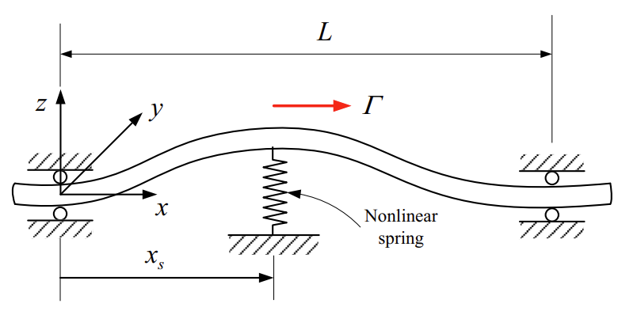

Nonlinear Vibration and Stability Analysis of Viscoelastic Rayleigh Beams Axially Moving on a Flexible Intermediate Support
Iranian Journal of Science and Technology, Transactions of Mechanical Engineering, 44, pp.865-879, 2020. Journal Article

Abstract
In this study, the nonlinear vibration and stability of a simply supported axially moving Rayleigh viscoelastic beam equipped with an intermediate nonlinear support are investigated. The type of considered nonlinearity is geometric and is due to the axial stretching. The Kelvin–Voigt model is used to regard the beam internal damping. The Hamilton’s principle is employed to derive the governing equations and corresponding boundary conditions. The multiple scales method is applied to the dimensionless form of the governing equations and the nonlinear frequencies, time response of the system for two cases of the axial velocity fluctuation frequency are obtained. The stability of the system is investigated via solvability condition and Routh–Hurwitz criterion. Some case studies are accomplished to demonstrate the effect of rotary inertia, axial velocity and parameters of intermediate support on the system response, critical velocity and the system stability. Furthermore, the variation of the first two resonance frequencies with respect to mean axial velocities for different locations of the intermediate support are investigated. It is found that by moving the intermediate support from one end of the beam to its midpoint, the region in which the first mode undergoes static instability, shrinks. Moreover, although rotary inertia impressively decreases the natural frequencies, intermediate support has the dominant effect on increasing the natural frequencies.